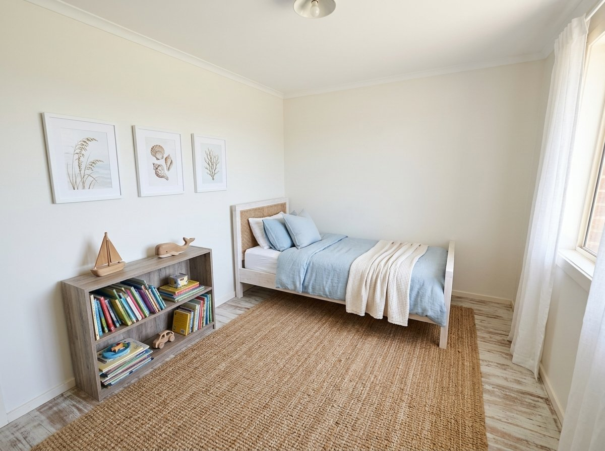
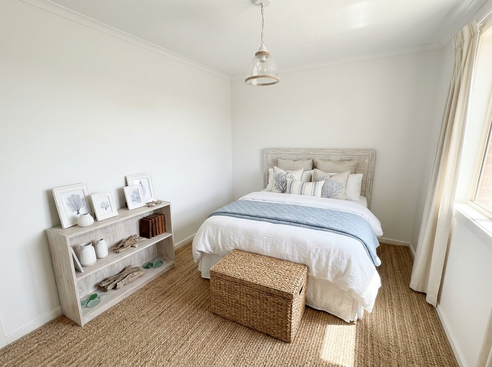

Not judged yet. Pass = marked pieces gone, no unmarked piece lost, nothing new invented, layout and camera unchanged, style applied.
piece touching a neighbour: desk goes, its chair stays (coastal)
1 image call(s), 10 s

1 image call(s), 10 s
